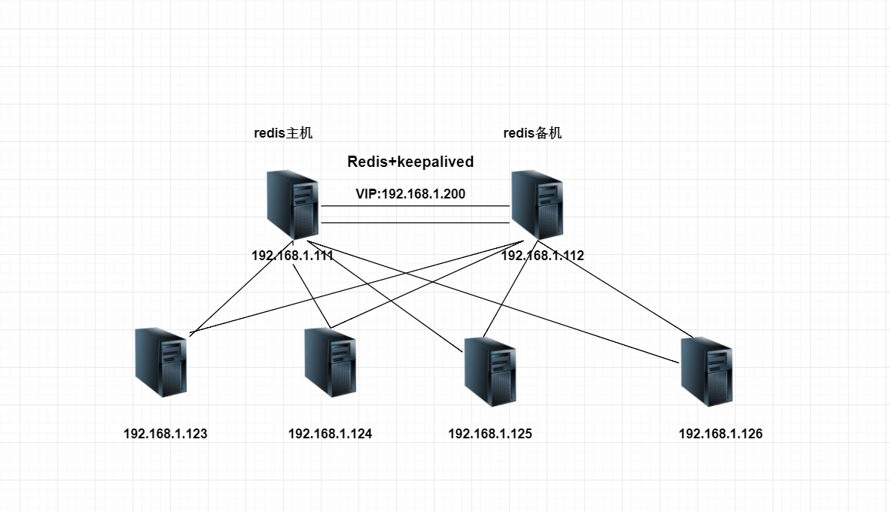
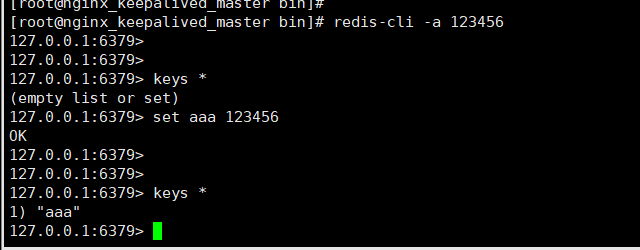
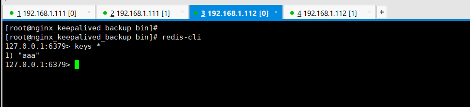

Contents
8.4. Redis+keepalived高可用集群实战¶
Redis是我们当下比较流行使用的非关系数据库，可支持多样化的数据类型，多线程高并发支持，redis运行在内存拥有更快的读写。因为redis的表现如此出色，如何能保障redis在运行中能够应对宕机故障，
redis主从高可用的搭建，参考了网上一些大神的博客文章
8.4.1. Redis特点¶
Redis 是完全开源免费的，遵守BSD协议，是一个高性能的key-value数据库。
Redis 与其他 key - value 缓存产品有以下三个特点：
Redis支持数据的持久化，可以将内存中的数据保持在磁盘中，重启的时候可以再次加载进行使用。
Redis不仅仅支持简单的key-value类型的数据，同时还提供如：字符串(String), 哈希(Map), 列表(list), 集合(sets) 和有序集合(sorted sets)等数据结构的存储。
Redis支持数据的备份，即master-slave模式的数据备份。
8.4.2. Redis 优势¶
性能极高 – Redis能读的速度是100K+次/s,写的速度是80K+次/s 。
丰富的数据类型 – Redis支持二进制案例的 Strings, Lists, Hashes, Sets 及 Ordered Sets 数据类型操作。
原子 – Redis的所有操作都是原子性的，同时Redis还支持对几个操作全并后的原子性执行。
丰富的特性 – Redis还支持 publish/subscribe, 通知, key 过期等等特性。
8.4.3. 环境介绍¶

Centos7 192.168.1.111 -->主Redis -->主Keepalived
Centos7 192.168.1.112 -->从Redis -->备Keepalived
VIP --> 192.168.1.200
8.4.4. Redis的安装¶
cd /usr/src
wget -c http://download.redis.io/releases/redis-2.8.13.tar.gz
tar zxvf redis-2.8.13.tar.gz
cd redis-2.8.13
make PREFIX=/usr/local/redis install
cp redis.conf /usr/local/redis/
export PATH=/usr/local/redis/bin:$PATH
或者
添加redis命令环境变量
#vi /etc/profile
#添加下一行参数
exportPATH="$PATH:/usr/local/redis/bin"
#环境变量生效
source /etc/profile
#手动开启redis进程
nohup /usr/local/redis/bin/redis-server /usr/local/redis/redis.conf &
8.4.5. Redis主从的配置¶
Master配置文件
[root@nginx_keepalived_master redis]# cat /usr/local/redis/redis.conf | grep -v "^$"|grep -v "^#"
daemonize yes
pidfile /var/run/redis.pid
port 6379
tcp-backlog 511
bind 0.0.0.0 #访问权限
requirepass 123456 #设置登录密码
slave-serve-stale-data yes
slave-read-only no
timeout 0
tcp-keepalive 0
loglevel notice
logfile "/var/log/redis.log" #记录日志
databases 16
save 900 1
save 300 10
save 60 10000
stop-writes-on-bgsave-error yes
rdbcompression yes
rdbchecksum yes
dbfilename dump.rdb
dir ./
slave-serve-stale-data yes
slave-read-only yes
repl-disable-tcp-nodelay no
slave-priority 100
appendonly no
appendfilename "appendonly.aof"
appendfsync everysec
no-appendfsync-on-rewrite no
auto-aof-rewrite-percentage 100
auto-aof-rewrite-min-size 64mb
lua-time-limit 5000
slowlog-log-slower-than 10000
slowlog-max-len 128
latency-monitor-threshold 0
notify-keyspace-events ""
hash-max-ziplist-entries 512
hash-max-ziplist-value 64
list-max-ziplist-entries 512
list-max-ziplist-value 64
set-max-intset-entries 512
zset-max-ziplist-entries 128
zset-max-ziplist-value 64
hll-sparse-max-bytes 3000
activerehashing yes
client-output-buffer-limit normal 0 0 0
client-output-buffer-limit slave 256mb 64mb 60
client-output-buffer-limit pubsub 32mb 8mb 60
hz 10
aof-rewrite-incremental-fsync yes
Backup配置文件
[root@nginx_keepalived_backup redis-2.8.13]# cat /usr/local/redis/redis.conf | grep -v "^$"|grep -v "^#"
daemonize yes
pidfile /var/run/redis.pid
port 6379
tcp-backlog 511
bind 0.0.0.0
timeout 0
tcp-keepalive 0
loglevel notice
logfile "/var/log/redis.log"
databases 16
save 900 1
save 300 10
save 60 10000
stop-writes-on-bgsave-error yes
rdbcompression yes
rdbchecksum yes
dbfilename dump.rdb
dir ./
slaveof 192.168.1.111 6379 #主机IP
masterauth 123456
slave-serve-stale-data yes
slave-read-only no
slave-serve-stale-data yes
slave-read-only yes
repl-disable-tcp-nodelay no
slave-priority 100
appendonly no
appendfilename "appendonly.aof"
appendfsync everysec
no-appendfsync-on-rewrite no
auto-aof-rewrite-percentage 100
auto-aof-rewrite-min-size 64mb
lua-time-limit 5000
slowlog-log-slower-than 10000
slowlog-max-len 128
latency-monitor-threshold 0
notify-keyspace-events ""
hash-max-ziplist-entries 512
hash-max-ziplist-value 64
list-max-ziplist-entries 512
list-max-ziplist-value 64
set-max-intset-entries 512
zset-max-ziplist-entries 128
zset-max-ziplist-value 64
hll-sparse-max-bytes 3000
activerehashing yes
client-output-buffer-limit normal 0 0 0
client-output-buffer-limit slave 256mb 64mb 60
client-output-buffer-limit pubsub 32mb 8mb 60
hz 10
aof-rewrite-incremental-fsync yes
8.4.6. redis启动脚本¶
[root@nginx_keepalived_master redis]# cat redis
#!/bin/sh
#chkconfig:2345 80 90
# Simple Redisinit.d script conceived to work on Linux systems
# as it doesuse of the /proc filesystem.
#配置redis端口号
REDISPORT=6379
#配置redis启动命令路径
EXE=/usr/local/redis/bin/redis-server
#配置redis连接命令路径
CLIEXE=/usr/local/redis/bin/redis-cli
#配置redis运行PID路径
PIDFILE=/var/run/redis_6379.pid
#配置redis的配置文件路径
CONF="/usr/local/redis/redis.conf"
#配置redis的连接认证密码
REDISPASSWORD=123456
function start () {
if [ -f $PIDFILE ]
then
echo "$PIDFILE exists,process is already running or crashed"
else
echo "Starting Redisserver..."
$EXE $CONF &
fi
}
function stop () {
if [ ! -f $PIDFILE ]
then
echo "$PIDFILE does not exist, process is not running"
else
PID=$(cat $PIDFILE)
echo "Stopping ..."
$CLIEXE -p $REDISPORT -a $REDISPASSWORD shutdown
while [ -x /proc/${PID} ]
do
echo "Waiting forRedis to shutdown ..."
sleep 1
done
echo "Redis stopped"
fi
}
function restart () {
stop
sleep 3
start
}
case "$1" in
start)
start
;;
stop)
stop
;;
restart)
restart
;;
*)
echo -e "\e[31m Please use $0 [start|stop|restart] asfirst argument \e[0m"
;;
esac
授予执行权限：
chmod +x /etc/init.d/redis
cp -rf redis /etc/init.d/
添加开机启动：
chkconfig --add redis
chkconfig redis on
chkconfig --list | grep redis
8.4.7. 查看redis主从状态¶
主机
[root@nginx_keepalived_master bin]# redis-cli -a 123456 info
# Stats
total_connections_received:2
total_commands_processed:365
instantaneous_ops_per_sec:1
rejected_connections:0
sync_full:1
sync_partial_ok:0
sync_partial_err:0
expired_keys:0
evicted_keys:0
keyspace_hits:0
keyspace_misses:0
pubsub_channels:0
pubsub_patterns:0
latest_fork_usec:4457
# Replication
role:master
connected_slaves:1
slave0:ip=192.168.1.112,port=6379,state=online,offset=505,lag=1
master_repl_offset:505
repl_backlog_active:1
repl_backlog_size:1048576
repl_backlog_first_byte_offset:2
repl_backlog_histlen:504
备机
[root@nginx_keepalived_backup bin]# redis-cli -a 123456 info
# Stats
total_connections_received:2
total_commands_processed:39
instantaneous_ops_per_sec:0
rejected_connections:0
sync_full:0
sync_partial_ok:0
sync_partial_err:0
expired_keys:0
evicted_keys:0
keyspace_hits:0
keyspace_misses:0
pubsub_channels:0
pubsub_patterns:0
latest_fork_usec:0
# Replication
role:slave
master_host:192.168.1.111
master_port:6379
master_link_status:up
master_last_io_seconds_ago:9
master_sync_in_progress:0
slave_repl_offset:505
slave_priority:100
slave_read_only:1
connected_slaves:0
master_repl_offset:0
repl_backlog_active:0
repl_backlog_size:1048576
repl_backlog_first_byte_offset:0
repl_backlog_histlen:0
 
8.4.8. KeepAlived配置实现双机热备¶
keepalived主机配置
[root@nginx_keepalived_master keepalived]# cat keepalived.conf
! Configuration File for keepalived
global_defs {
notification_email {
root@localhost #健康检查报告通知邮箱
}
notification_email_from keepalived@localhost #发送邮件的地址
smtp_server 127.0.0.1 #邮件服务器
smtp_connect_timeout 30
route_id LVS_DEVEL
}
vrrp_script chk_redis
{
script "/etc/keepalived/script/redis_check.sh"
interval 2
}
vrrp_instance VI_1 {
state BACKUP
interface eth0
virtual_router_id 51
priority 100
nopreempt
advert_int 1
authentication {
auth_type PASS
auth_pass 1111
}
track_script {
chk_redis
}
virtual_ipaddress {
192.168.1.200/24
}
notify_master /etc/keepalived/script/redis_master.sh
notify_backup /etc/keepalived/script/redis_backup.sh
notify_fault /etc/keepalived/script/redis_fault.sh
notify_stop /etc/keepalived/script/redis_stop.sh
/etc/keepalived/script/目录下的脚本如下 redis_check.sh
#!/bin/bash
ALIVE=`/usr/local/redis/bin/redis-cli -a 123456 PING`
if [ "$ALIVE" == "PONG" ];then
echo $ALIVE
exit 0
else
echo $ALIVE
exit 1
fi
redis_master.sh
#!/bin/bash
REDISCLI="/usr/local/redis/bin/redis-cli -a 123456"
LOGFILE="/var/log/keepalived-redis-state.log"
sleep 15
echo "[master]" >> $LOGFILE
date >> $LOGFILE
echo "Being master...." >>$LOGFILE 2>&1
echo "Run SLAVEOF cmd ...">> $LOGFILE
$REDISCLI SLAVEOF 192.168.1.112 6379 >>$LOGFILE 2>&1
if [ $? -ne 0 ];then
echo "data rsync fail." >>$LOGFILE 2>&1
else
echo "data rsync OK." >> $LOGFILE 2>&1
fi
sleep 10 #延迟10秒以后待数据同步完成后再取消同步状态
echo "Run SLAVEOF NO ONE cmd ...">> $LOGFILE
$REDISCLI SLAVEOF NO ONE >> $LOGFILE 2>&1
if [ $? -ne 0 ];then
echo "Run SLAVEOF NO ONE cmd fail." >>$LOGFILE 2>&1
else
echo "Run SLAVEOF NO ONE cmd OK." >> $LOGFILE 2>&1
fi
redis_backup.sh
#!/bin/bash
REDISCLI="/usr/local/redis/bin/redis-cli -a 123456"
LOGFILE="/var/log/keepalived-redis-state.log"
echo "[backup]" >> $LOGFILE
date >> $LOGFILE
echo "Being slave...." >>$LOGFILE 2>&1
sleep 15 #延迟15秒待数据被对方同步完成之后再切换主从角色
echo "Run SLAVEOF cmd ...">> $LOGFILE
$REDISCLI SLAVEOF 192.168.1.112 6379 >>$LOGFILE 2>&1
redis_fault.sh
#!/bin/bash
LOGFILE=/var/log/keepalived-redis-state.log
echo "[fault]" >> $LOGFILE
date >> $LOGFILE
[root@nginx_keepalived_master script]# cat redis_stop.sh
#!/bin/bash
LOGFILE=/var/log/keepalived-redis-state.log
echo "[stop]" >> $LOGFILE
date >> $LOGFILE
keepalived备机配置
[root@nginx_keepalived_backup keepalived]# cat keepalived.conf
! Configuration File for keepalived
global_defs {
notification_email {
root@localhost #健康检查报告通知邮箱
}
notification_email_from keepalived@localhost #发送邮件的地址
smtp_server 127.0.0.1 #邮件服务器
smtp_connect_timeout 30
route_id LVS_DEVEL
}
vrrp_script chk_redis
{
script "/etc/keepalived/script/redis_check.sh"
interval 2
}
vrrp_instance VI_1 {
state BACKUP
interface eth0
virtual_router_id 51
priority 90
advert_int 1
authentication {
auth_type PASS
auth_pass 1111
}
track_script {
chk_redis
}
virtual_ipaddress {
192.168.1.200/24
}
notify_master /etc/keepalived/script/redis_master.sh
notify_backup /etc/keepalived/script/redis_backup.sh
notify_fault /etc/keepalived/script/redis_fault.sh
notify_stop /etc/keepalived/script/redis_stop.sh
/etc/keepalived/script/目录下的脚本如下 redis_check.sh
#!/bin/bash
ALIVE=`/usr/local/redis/bin/redis-cli -a 123456 PING`
if [ "$ALIVE" == "PONG" ];then
echo $ALIVE
exit 0
else
echo $ALIVE
exit 1
fi
redis_master.sh
#!/bin/bash
REDISCLI="/usr/local/redis/bin/redis-cli -a 123456"
LOGFILE="/var/log/keepalived-redis-state.log"
sleep 15
echo "[master]" >> $LOGFILE
date >> $LOGFILE
echo "Being master...." >>$LOGFILE 2>&1
echo "Run SLAVEOF cmd ...">> $LOGFILE
$REDISCLI SLAVEOF 192.168.1.111 6379 >>$LOGFILE 2>&1
if [ $? -ne 0 ];then
echo "data rsync fail." >>$LOGFILE 2>&1
else
echo "data rsync OK." >> $LOGFILE 2>&1
fi
sleep 10 #延迟10秒以后待数据同步完成后再取消同步状态
echo "Run SLAVEOF NO ONE cmd ...">> $LOGFILE
$REDISCLI SLAVEOF NO ONE >> $LOGFILE 2>&1
if [ $? -ne 0 ];then
echo "Run SLAVEOF NO ONE cmd fail." >>$LOGFILE 2>&1
else
echo "Run SLAVEOF NO ONE cmd OK." >> $LOGFILE 2>&1
fi
redis_backup.sh
#!/bin/bash
REDISCLI="/usr/local/redis/bin/redis-cli -a 123456"
LOGFILE="/var/log/keepalived-redis-state.log"
echo "[backup]" >> $LOGFILE
date >> $LOGFILE
echo "Being slave...." >>$LOGFILE 2>&1
sleep 15 #延迟15秒待数据被对方同步完成之后再切换主从角色
echo "Run SLAVEOF cmd ...">> $LOGFILE
$REDISCLI SLAVEOF 192.168.1.111 6379 >>$LOGFILE 2>&1
redis_fault.sh
#!/bin/bash
LOGFILE=/var/log/keepalived-redis-state.log
echo "[fault]" >> $LOGFILE
date >> $LOGFILE
[root@nginx_keepalived_master script]# cat redis_stop.sh
#!/bin/bash
LOGFILE=/var/log/keepalived-redis-state.log
echo "[stop]" >> $LOGFILE
date >> $LOGFILE
进行主备切换，执行/usr/local/redis/bin/redis-cli -a 123456 info 查看redis主备的状态，
默认情况下redis备机无法写入数据，同步主机数据